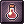
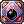

Gray Lino's Genetic Guide
This page serves as an example to help inexperienced editors, feel free to use your own template, or tweak this to your own liking
PLEASE DO NOT EDIT THIS PAGE, you can copy its content by clicking at the Edit Source button in the top right.
If you have problems creating a new page, you can find help here.
For general formatting help, check Mediawiki's page about formatting
Overview
Hello citizens of NovaRO.
I, Gray Lino, have been playing this server for less than a year.
It has been my first renewal server, and I've decided to make a genetic as my main.
Since I started, I've been performing tests on ALL combos for genetics with their respective homunculus and gears.
It is still on-going depending on the updates of the server.
Notes:
A Genetic is a third class of the merchant job. It is a job that can do every type of damage naming melee, ranged, and magic.
You can be a genetic following this job pattern: Novice > Merchant > Biochemist > Creator > Genetic ; or Novice > Merchant > Biochemist > Genetic
Although I do not recommend going the second route since you will loose a LOT of useful skills
A genetic has pros and cons naming:
Pros:
- They have a very powerful MVP killing skill called "Acid Demonstration" and "Cart-Cannon" (For Ghost Property)
- They have the skill that makes anything indestructible (EVEN WITH DIETER'S PYROCLASTIC) naming "Full-Chemical Protection"
- They have an extention lifetime pet called either Homunculus or Homunculus S (more to talk with PROs at the content)
Cons:
- Although they can deal any type of damage (as stated in the description), they cannot achieve full damage of every type at the same time.
- They have a low hp pool compared to the other characters
- They are a VERY EXPENSIVE character to gear and use everytime (more CONs at the content)
Stats
Stats are important for every chacater of this game. Knowing what they do to your genetic really gives you a bit of knowledge what and what not to boost.
- STR - a stat that raises your Base Attack, character weight limit and half of your weapon attack.
(Affected Genetic Skills: cart tornado, hallucination drug (attack), thorn wall (attack), acid demontstration, and cart cannon)
- AGI - a stat used to raise your Flee, Attack Speed, soft def, and to resist some kind of status (unsure about this).
- VIT - a stat used to raise your HP, Soft Def, soft mdef, healing item effects, hp recovery and as well resist most of the status ailments. (e.g. Stun
- INT - a stat used to raise hp, matk, soft mdef, sp recovery and decrease cast time. - This stat is the main focus for almost every Genetic's skill
(Affected Genetic Skills: blood sucker, cart cannon, demonic fire (matk), hell's plant, thorn trap)
- DEX - a stat used to increase atk, matk, and decrease cast time.
- LUK - a stat used to increase atk, matk, flee rate, and resist some status ailments.
Skills
For automatic parsing of the images and links to divine pride, use our Template:Skill List
First Job Skills
Use our Template:Skill List in this section.
| Skill/Max Lvl | Notes |
|---|---|
 Enlarge Weight Limit Lv 10 Enlarge Weight Limit Lv 10
|
You'll need to MAX this skill, since you'll need all that weight to carry all the cannon balls once you get to the genetic job. |
 Discount Lv 10 Discount Lv 10
|
I prefer this one maxed as well, since buying NPC items will be your regular go-to. |
 Overcharge Lv 10 Overcharge Lv 10
|
Max this. You'll want to sell loots for more don't you? |
 Pushcart Lv 10 Pushcart Lv 10
|
Max this as well, 100% walk speed with a cart is essential for anything. (unless you're a zombie in the making) |
 Identify Lv 1 Identify Lv 1
|
This is an optional skill, yet 'll recommend it if you want to save money in the long run. |
| Vending Lv 10 | Left over points so you can use @at (~ command used for afk vending even when you're away) on the days that you just want to do real life stuffs. |
 Mammonite Lv 10 Mammonite Lv 10
|
You do NOT need this skill ~ this skill is better used by blacksmiths |
 Cart Revolution (Platinum Skill) Lv 1 Cart Revolution (Platinum Skill) Lv 1
|
Your primary cheap leveling skill as a merchant/alchemist. I'd recommend maxing the weight of your cart by buying "meat" at prontera. ~ how to find the vendor
is you just type (@wn meat) in game; and use the navi command to find it otherwise type /where till it makes sense. |
 Change Cart (Platinum Skill) Lv 1 Change Cart (Platinum Skill) Lv 1
|
This is just for cosmetics |
 Loud Exclamation (Platinum Skill) Lv 1 Loud Exclamation (Platinum Skill) Lv 1
|
+4 Str is always good for extra damage; so put this buff on your hotkeys. there's a trick on using this one too (to be discussed on tactics) |
Second/Trans Job Skills
| Second Job Skill/Max Lvl | Notes |
|---|---|
 Axe Mastery Lv 10 Axe Mastery Lv 10
|
You won't really need this as "mastery skills" only add damage to the (end) of your atk. Let's say you hit a monster for 1000 dmg; You will do 1030 with this one. |
 Learning Potion Lv 10 Learning Potion Lv 10
|
For Potion Brewers, you have to max this one. For MvP builds ~ some points goes here just for skill requirement. |
 Pharmacy Lv 10 Pharmacy Lv 10
|
Same Description as Learning Potion. |
 Demonstration Lv 5 Demonstration Lv 5
|
It's just a skill requirement for your mvp killing skill (Acid Demonstration) |
 Acid Terror Lv 5 Acid Terror Lv 5
|
Same as Demonstration |
 Potion Pitcher Lv 5 Potion Pitcher Lv 5
|
Unless you're going to be a support type genetic this skill isn't recommended. Also, this is the only way to heal your "homunculus". |
| Bio Cannibalize Lv 5 | Recommended to max this skill as it affects the damage of your genetic skill "Hell's plant" as per iRO. |
 Sphere Mine Lv 5 Sphere Mine Lv 5
|
You do not need this skill |
 Chemical Protection Weapon Lv 5 Chemical Protection Weapon Lv 5
|
Max as required for "Full-Chemical Protection" at your Trans Days. |
 Chemical Protection Shield Lv 5 Chemical Protection Shield Lv 5
|
Max as required for "Full-Chemical Protection" at your Trans Days. |
 Chemical Protection Armor Lv 5 Chemical Protection Armor Lv 5
|
Max as required for "Full-Chemical Protection" at your Trans Days. |
 Chemical Protection Helm Lv 5 Chemical Protection Helm Lv 5
|
Max as required for "Full-Chemical Protection" at your Trans Days. |
 Bioethics Lv 1 Bioethics Lv 1
|
This is required for you to open your "homunculus" skill tree. |
 Call Homunculus Lv 1 Call Homunculus Lv 1
|
Skill required to call or summon a random homunculus upon first attempt to create one; or to release your ready-made homunculus. |
 Rest Lv 1 Rest Lv 1
|
a skill used to hide your current called homunculus. (doing so will save you food for the homunculus, since the timer stops and it will never get hungry) |
 Resurrect Homunculus Lv 5 Resurrect Homunculus Lv 5
|
Upon death, a homunculus can be resurrected with this skill. However, different levels determine how much health points does your homunculus get upon resurrection. (i prefer max so i dont have to potion pitch the homunculus and just let it die and resurrect it) |
 Berserk Pitcher Lv 1 (Soul Linked Skill) Berserk Pitcher Lv 1 (Soul Linked Skill)
|
When soul linked, you get to use the item "berserk pitcher" to enchant to any kind of player (even the ones that cannot consume it) |
 Twilight Alchemy I Lv 1(Soul Linked Skill) Twilight Alchemy I Lv 1(Soul Linked Skill)
|
fastest way to make white potions (you have to have all the ingredients though. refer to brewing guide) |
|  Twilight Alchemy II Lv 1 (Soul Linked Skill) | fastest way to make condensed white potions, however you'll need a soul linker(the same linker that soul linked you) and a super novice in your party just to use it. (refer to brewing section for ingredients) |
 Twilight Alchemy III Lv 1 (Soul Linked Skill) Twilight Alchemy III Lv 1 (Soul Linked Skill)
|
fastest way to make acid bomb, bottle grenade, and alcohol. This skill can be used with only 1 item goal. example. you only want acid bombs ~ you'll only need the ingredients required. ~ (you have to have the soul linker and a taekwon boy in a party to make this work. ( refer to the brewing guide for ingredients and tactics) |
| Transcedent Job Skill/ Max Lv | Notes |
|---|---|
 Slim Potion Pitcher Lv 10 Slim Potion Pitcher Lv 10
|
Same description as Potion pitcher, only difference is you use condensed slim potions and more healing %. |
 Full Chemical Protection Lv 5 Full Chemical Protection Lv 5
|
Essential for Solo or even party MvP hunting. Also a good use for PvP. |
 Acid Demonstration Lv 10 Acid Demonstration Lv 10
|
One of the strongest MvP killing skills that depends on your INT, ATK and the enemy's VIT. |
 Plant Cultivation Lv 2 Plant Cultivation Lv 2
|
If you need to farm plants and hope to get requirements for brewing, this skill is a go-to. Otherwise just leave it. |
Third Job Skills
| Skill/Max Lvl | Notes |
|---|---|
 Sword Training Lv 5 Sword Training Lv 5
|
Same as Axe Mastery ~ the only difference is the weapon that it gives the bonus atk on. |
 Cart Remodeling Lv 5 Cart Remodeling Lv 5
|
Max this as "Cart Cannon" damage depends on the level of this too. (to be discussed on formula's) |
 Cart Tornado Lv 5 Cart Tornado Lv 5
|
not essential, yet useful for the "knock-back" effect. |
 Cart Cannon Lv 5 Cart Cannon Lv 5
|
Your main/ secondary MvP killing skill. This is your only skill that can inflict "ghost" property damage for "ghost" mvp's or monsters. (to be discussed on formula's) |
 Cart Boost Lv 5 Cart Boost Lv 5
|
Max this skill. Not only it gives you more ATK, it also increases your movement speed by ALOT. It is very very useful for "running" out of situations or Mobbing or just anything that you think speed can help you do. |
 Thorn Trap Lv 5 Thorn Trap Lv 5
|
This skill is great for "locking" an MvP. However, it's not recommended to lock an MvP in place using this because it's considered as "rude" atk that can make the MvP use the skill "teleport". This skill is very useful at "Endless Tower" and PvP. |
 Blood Sucker Lv 5 Blood Sucker Lv 5
|
For Plant Monsters, This skill is like a plant eating machine. It also heals a portion of your damage back on yourself. |
 Spore Explotion Lv 5 Spore Explotion Lv 5
|
This makes any monster become a time bomb. When the timer reached the limit, it emits an Area of effect damage that will cause monsters beside it to get damage as well. (formula at tactics) |
 Wall of Thorns Lv 5 Wall of Thorns Lv 5
|
This works both ways as having a defense barrier that inflicts damage to whoever touches it, and knocking back monsters upon contact. |
 Crazy Weed Lv 10 Crazy Weed Lv 10
|
This skill has a decent damage output; however, the cast time is it's downfall. People use this mostly to remove AoE skills on the ground. |
 Demonic Fire Lv 5 Demonic Fire Lv 5
|
A magic skill that inflicts Matk dmg, and can be modified to different effects by using Fire Expansion. |
 Fire Expansion Lv 5 Fire Expansion Lv 5
|
Every level of this skill amplifies the skill "demonic fire" in a different way. I recommend getting this to MAX level as the last effect is = to an AoE "Acid Demonstration" |
 Hell's Plant Lv 5 Hell's Plant Lv 5
|
Works Like a trap; however, it can be enchanted below the target. This skill inflicts a fixed damage which is very useful for PvP. |
 Howling of Mandragora Lv 5 Howling of Mandragora Lv 5
|
An AoE skill that drains the enemy's SP. Very useful for PvP. |
 Sling Item Lv 1 Sling Item Lv 1
|
There are different bombs with different effects (more will be discussed on tactics) |
 Change Material Lv 1 Change Material Lv 1
|
Useful for changing some of the items to a random new item. I recommend getting this skill only if you're doing a brewer. |
 Mix Cooking Lv 2 Mix Cooking Lv 2
|
Used to make +20 buff foods and some other ones. |
|  Create Bomb Lv 2 | Enables to create bombs for throwing using the "sling item". |
 Special Pharmacy Lv 10 Special Pharmacy Lv 10
|
Only recommended to get it maxed when you're a brewer. Otherwise, only take the required amount to open a skill that requires this. |
 Illusion Doping Lv 5 Illusion Doping Lv 5
|
Useful for PVP, as it flips the enemy's screen. |
 Full Throttle Lv 5 Full Throttle Lv 5
|
I recommend this skill only when "times get tough". It's like a berserk skill which is only useful for running away or getting that last hit in a time limited game. |
Equipment
Note: As you start your journey, Eden Equipment will be provided to you by the Eden Headquarters. If you complete certain quests at certain levels, you can acquire them, and they are usually more suitable than any other basic items made in the game. Also, some of the armors given can be enchanted with stats/damage modifiers for a cheap requirement.
Please see <link> for details.
I will only recommend the mid-end game equipment, please save all your zennies for those ones. Choosing a genetic for a first character is never a cheap option, please feel free to edit my post for added information.
I recommend using our Template:Item List for linking items. The template automatically parses the thumbnail of the item, and creates a link to Divine Pride.
For cards, see Template:Card
Recommended format:
Headgears
| Item | Type | Way to obtain | Notes |
|---|---|---|---|
 Ship Captain Hat [1] Ship Captain Hat [1]
|
Upper | Cash Shop/Player Sold | Gives 7% more "ranged damage" and your primary skill "acid demonstration and cart cannon" are ranged damage skills. |
 Rideword Hat [1] Rideword Hat [1]
|
Upper | Headgear Quest/Cash Shop Item | Essential for early farming if you don't have access to "Thanatos" Weapons obtained from the instance "Ghost Palace" |
| Card | Monster drop | Personal notes, effect of the card. | |
| Card | Monster drop | Personal notes, effect of the card. | |
| Card | Monster drop | Personal notes, effect of the card. | |
| Card | Monster drop | Personal notes, effect of the card. | |
| Card | Monster drop | Personal notes, effect of the card. | |
| Card | Monster drop | Personal notes, effect of the card. | |
| Card | Monster drop | Personal notes, effect of the card. | |
| Card | Monster drop | Personal notes, effect of the card. | |
| Card | Monster drop | Personal notes, effect of the card. | |
| Card | Monster drop | Personal notes, effect of the card. | |
| Card | Monster drop | Personal notes, effect of the card. | |
| Card | Monster drop | Personal notes, effect of the card. | |
| Card | Monster drop | Personal notes, effect of the card. | |
| Card | Monster drop | Personal notes, effect of the card. | |
| Card | Monster drop | Personal notes, effect of the card. | |
| Card | Monster drop | Personal notes, effect of the card. | |
| Card | Monster drop | Personal notes, effect of the card. | |
| Card | Monster drop | Personal notes, effect of the card. |
Armors
Weapons
Shields
Garments
Shoes
Accessories
Builds
Summary of the section (optional)
Your build
Introduction about the build, brief summary, optional.
Stats
An example stat build goes here:
- STR 100
- AGI 100
- VIT 100
- INT 100
- DEX 100
- LUK 100
Skills
Example of an already currently laid out skill build, OR listing essential skills for the build with comments
Either text or image format.
Equipment
List of the key pieces of equipment recommended for said build.
Strategy
Explanation of the build's uses
Gameplay
Class specific tips and tricks, such as certain skill mechanics and special roles in certain environments.
For example: Warlock's spellbook mechanics and Kage/Oboro's charms, different weapon types and their uses for Rebellions
Leveling
Leveling places and tactics go here. To help you start, some of the relatively easier Eden Equipment Quests and a number of instance dungeons have been added. You can also add other hunting and item collecting quests from Eden Quest Boards here, just be sure to add the level range. Feel free to edit or remove as you see fit for your own guide. Remember to remove this text and the code brackets when you're editing.
Lv 1 - Lv 99
- Lv 1 - Lv 30
- Recommended monsters to hunt, quests to take, strategies, etc.
- Lv 26 - Lv 32
- Instructor Boya's Eden Equipment Quest in Payon Cave: Talk to the Eden Group Member outside of Payon Cave before you start hunting Skeletons and Poporings. When you've completed them, report to the Eden Group Member, then to Instructor Boya. You will receive your first set of Eden Equipment from Administrator Michael in the room behind the Blue Door.
- Lv 50 - Lv 59
- Instructor Boya's Eden Equipment Quest in Orc Dungeon: Talk to the Eden Group Member outside of Orc Dungeon before you start hunting Orc Zombies and Orc Skeletons. When you've completed them, report to the Eden Group Member then to instructor Boya. You will receive your second set of Eden Equipment from Administrator Michael in the room behind the Blue Door.
- Lv 70 - 79
- Instructor Ur's Eden Equipment Quest in Glast Heim: Talk to the Eden Group Member outside of Glast Heim Churchyard before you start hunting Wraiths and Evil Druids. When you've completed them, report to the Eden Group Member then to instructor Ur. You will receive your third and final set of Eden Equipment from Blacksmith Thorn in the room behind the Blue Door.
- Lv 85 - Lv 114
- Level range to join the first bracket of Gramps quests. Note that Gramps quests are rotated at the start of every month. You can also hunt them outside of Gramps map. Use the
@whereis (monster name)command to find out where a monster spawns.
- Level range to join the first bracket of Gramps quests. Note that Gramps quests are rotated at the start of every month. You can also hunt them outside of Gramps map. Use the
- Lv 91 - Lv 99
Note that several quests in this board in particular give you the option of rewarding you with normal Base and Job EXP, or give zero Base EXP and twice as much Job EXP. If you think a particular build or job class may have trouble with getting Job Levels, please suggest some Lv 91-99 quests for them, and mention the double Job EXP reward option.
Lv 100+
If you have been giving solo leveling tips so far, you must give tips for leveling in a party in this section. Few job classes are able to level solo easily after reaching Lv 100, and players may have difficulty adjusting from solo leveling to party leveling. It's very important to explain once more the role of the job class in a party, what they can do to help, what skills to use and in which situation, and so on.
- Lv 100
- Minimum level to access Sara's Memory, Bangungot Hospital.
- You must complete Cautious Village and Nurse in Port Malaya quests to access Bangungot Hospital.
- Minimum level to access Sara's Memory, Bangungot Hospital.
- Lv 115 - Lv 144
- Level range to join the second bracket of Gramps quests.
- Lv 120
- Minimum level to access Nightmarish Jitterbug, Ghost Palace.
- Lv 125
- Minimum level to access Airship Assault, Devil's Tower.
- Lv 130
- Minimum level to access Old Glast Heim Normal Mode, Charleston Crisis, Buwaya Cave.
- Lv 140
- Minimum level to access Horror Toy Factory, Central Laboratory, Malangdo Culvert, Bakonawa Lake.
- You must complete Cautious Village and Bakonawa Extermination to access Bakonawa Lake.
- Minimum level to do Dimensional Travel. This is a pre-requisite quest to access Bios Island.
- Minimum level to access Horror Toy Factory, Central Laboratory, Malangdo Culvert, Bakonawa Lake.
- Lv 145 - Lv 175
- Level range to join the third bracket of Gramps quests.
- Lv 145
- Minimum level to access Sarah and Fenrir.
- Lv 160
- Minimum level to access Bios Island, Morse Cave, Temple of the Demon God, Monster Hunter, and Deserted Island.
- Recommended level to try Old Glast Heim Hard Mode if you have not done so at this point.